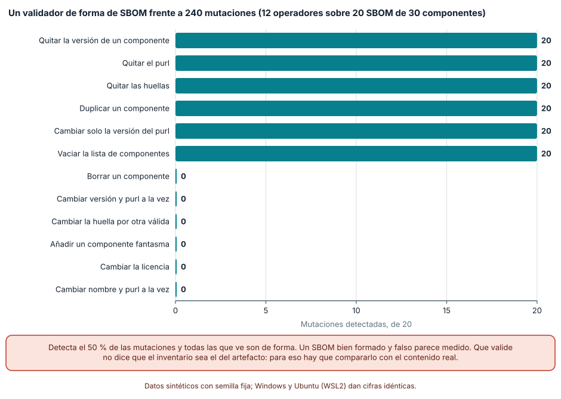
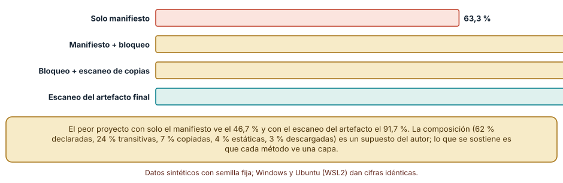
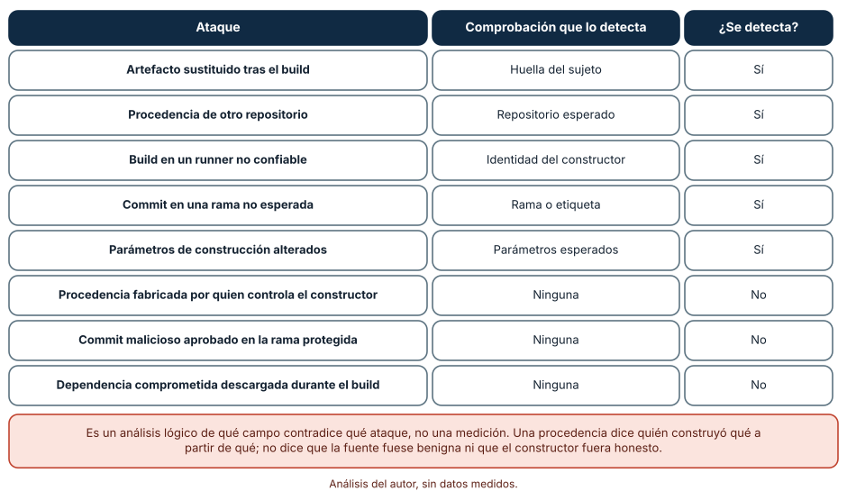

← SE-399 — Dependencias directas, transitivas y vendorización · ↑ Parte 33 · 📚 Índice completo · 🌐 Portal · SE-401 — Firmas, checksums y verificación →
Punto profesional y fundamento pedagógico
Punto profesional. La clase existe para que puedas entregar, junto con un artefacto, dos documentos que otra persona pueda leer sin confiar en ti: qué contiene (SBOM, la lista de materiales de software) y de dónde sale (procedencia, el registro de quién lo construyó, con qué entradas y con qué proceso). La habilidad profesional no es generar el archivo, sino saber qué puede afirmar cada documento, quién responde por esa afirmación y qué errores y mentiras no detecta nadie que solo compruebe su formato.
Por qué aparece aquí. Sigue a Dependencias directas, transitivas y vendorización: allí se obtuvo un inventario fijado; aquí se convierte en un documento estándar y se le añade el origen del build. Precede a Firmas, checksums y verificación, que protegerá estos documentos de la manipulación. El caso conductor es el release de la API de entregas, ahora con su SBOM y su procedencia.
Error conceptual que debe corregir. Creer que tener un SBOM equivale a conocer las dependencias, o que una procedencia «verificada» equivale a un artefacto seguro. El SBOM es tan completo como el método que lo generó: un manifiesto declarado deja fuera lo vendorizado y lo enlazado; y una procedencia dice quién construyó qué a partir de qué, no que la fuente fuese benigna ni que el constructor fuera honesto.
Secuencia de aprendizaje. Antes de medir, predices qué fracción de los componentes reales verá un SBOM generado solo desde el manifiesto y qué ataque de una lista de ocho detecta una verificación de los campos de la procedencia; después mides un validador de forma frente a 240 mutaciones de un SBOM, comparas cuatro métodos de inventario sobre 100 proyectos sintéticos y analizas qué ataques contradice cada campo de una procedencia. La secuencia usa predicción, mutaciones con semilla y un análisis lógico declarado como tal.
Evidencia de aprendizaje. sbom-log.md con la predicción, las tres figuras reproducidas, un SBOM de la API de entregas generado a partir del bloqueo, una procedencia con sujeto, constructor, fuente y materiales, y una nota que separe lo que cada documento afirma de lo que ninguna comprobación automática verifica.
Límite de la conclusión. El SBOM sigue un esquema simplificado inspirado en CycloneDX y las procedencias son documentos propios con campos cercanos a los de SLSA e in-toto, no los formatos completos; los 100 proyectos y la composición de sus componentes (62 % declarados, 24 % transitivos, 7 % copiados, 4 % enlazados, 3 % descargados en ejecución) son supuestos del autor; el análisis de ataques frente a campos de la procedencia es lógico, no medido. No se usó ninguna herramienta generadora de SBOM, ningún servicio de atestaciones ni ninguna base de vulnerabilidades.
Trazabilidad fuente → afirmación
| Fuente primaria u oficial | Afirmación que respalda | Lo que no prueba |
|---|---|---|
| CycloneDX: visión general de la especificación | Define un formato de lista de materiales con componentes, versiones, huellas, licencias y dependencias entre componentes. | No dice cómo de completo debe ser un SBOM concreto. |
| SPDX 2.3 | Describe un formato alternativo de lista de materiales de software, normalizado por ISO/IEC 5962. | No sustituye la verificación del contenido real del artefacto. |
| NTIA: elementos mínimos de un SBOM (2021) | Fija los datos mínimos que un SBOM debe contener (proveedor, nombre, versión, identificadores, relaciones, autor, marca de tiempo). | No exige un método de generación ni comprueba exactitud. |
| SLSA v1.0: procedencia | Define el contenido de una procedencia: el sujeto, el constructor, los materiales y los parámetros de la construcción. | No garantiza que la procedencia sea veraz si quien controla el constructor puede fabricarla. |
| in-toto: formato de declaración (Statement) | Describe cómo una atestación liga un predicado (afirmación) a un sujeto identificado por su huella. | No indica qué predicados son suficientes para confiar. |
| Package URL (purl) | Especifica un identificador uniforme de paquetes (ecosistema, nombre, versión) que los SBOM usan para referirse a componentes. | No resuelve que dos purl distintos designen el mismo código. |
Antes de empezar
Recupera lo aprendido en SE-399: la clausura instalada está fijada con versiones y huellas. La pregunta activa es: ¿cómo le cuento a otra persona qué contiene este artefacto y cómo se construyó, de una forma que pueda comprobar, y qué no puede comprobar?
Prerrequisitos
- Haber completado
SE-399o poder explicar la diferencia entre manifiesto, bloqueo y clausura. - Python 3.11 o posterior; los experimentos usan solo la biblioteca estándar (
json,hashlib,random,copy). - Saber leer un documento JSON y qué es un identificador de paquete.
Problema auténtico
Tras el anuncio de una vulnerabilidad, un cliente de la plataforma pide el SBOM del release que usa. El equipo genera uno desde el manifiesto en cinco minutos y lo envía. Una semana después, el cliente descubre que la pieza vulnerable está en el artefacto y no en el SBOM: llegó como dependencia transitiva y como una copia vendorizada de otra biblioteca. El cliente había basado su decisión de no actuar en el documento.
Meses más tarde, otro cliente pide la procedencia del release. El equipo envía un archivo que dice que lo construyó el CI. Nadie puede responder cómo se sabe que el CI usó el commit que dice.
Objetivos observables
Al terminar podrás:
- describir los campos de un SBOM y de una procedencia y para qué sirve cada uno;
- generar un SBOM desde un archivo de bloqueo y comparar la completitud de cuatro métodos de inventario;
- escribir un validador de forma, medirlo frente a mutaciones y decir qué clase de error no puede ver;
- enlazar un SBOM y una procedencia a un artefacto por su huella;
- razonar qué ataque contradice cada campo de una procedencia y cuáles pasan una verificación de campos.
Mapa conceptual
Ver la notación fuente del diagrama
flowchart LR
A[Archivo de bloqueo] --> B[SBOM: componentes, versiones, huellas, relaciones]
C[Build: constructor, fuente, parámetros, materiales] --> D[Procedencia]
E[Artefacto y huella] --> F[Atestación: afirmación ligada a la huella]
B --> F
D --> F
F --> G{Verificador: ¿coincide con lo esperado?}
G -->|sí| H[Se puede desplegar]
G -->|no| I[Se rechaza]
J[Lo que el documento no puede decir: fuente maliciosa, constructor deshonesto] -.-> GEl mapa muestra que los documentos dependen de la huella del artefacto: sin ese vínculo, un SBOM o una procedencia pueden acompañar a cualquier archivo. La línea punteada marca el límite: lo que el verificador no puede ver.
Temas y por qué importan
| Tema | Por qué cambia una decisión profesional | Evidencia mínima |
|---|---|---|
| SBOM y sus campos | Es el vocabulario común para responder «¿estamos afectados?». | Predicción, traza causal y contraejemplo de SBOM en sbom-log.md |
| Completitud y método | Un SBOM incompleto da seguridad falsa. | Predicción, traza causal y contraejemplo de Completitud en sbom-log.md |
| Procedencia | Permite comprobar quién construyó qué y con qué. | Predicción, traza causal y contraejemplo de Procedencia en sbom-log.md |
| Atestaciones y vínculo con la huella | Un documento sin vínculo puede acompañar a cualquier artefacto. | Predicción, traza causal y contraejemplo de Atestaciones en sbom-log.md |
| Lo que ningún documento dice | Delimita el uso correcto. | Predicción, traza causal y contraejemplo de Límites en sbom-log.md |
Conceptos y decisiones
1. SBOM y sus campos
Un SBOM (*software bill of materials*) es una lista estructurada de los componentes de un artefacto con los datos suficientes para identificarlos: nombre, versión, un identificador uniforme (como el *Package URL*, que codifica ecosistema, nombre y versión), la huella de su contenido, la licencia, y las relaciones de dependencia entre ellos. Los formatos más usados son CycloneDX y SPDX; ambos son JSON o similares legibles por máquina. Los elementos mínimos que fijó la NTIA en 2021 incluyen quién lo produjo y cuándo, porque un SBOM sin autor ni fecha no puede evaluarse. Su utilidad inmediata es responder a un aviso: dado el identificador de una pieza vulnerable, buscar en los SBOM de todos los productos cuáles la contienen.
2. Completitud y método de generación
Un SBOM es tan completo como el método con que se obtuvo. Un SBOM generado desde el manifiesto solo ve lo declarado. Uno desde el archivo de bloqueo ve la clausura gestionada por el administrador de paquetes. Si además se escanean los archivos copiados se ven las piezas vendorizadas, y si se escanea el artefacto final (la imagen, el binario) se ve también lo enlazado estáticamente. Quedan siempre fuera las piezas descargadas en tiempo de ejecución, que ningún análisis estático de un artefacto puede inventariar. Por eso un SBOM debe declarar su método y su alcance, y una consulta del tipo «¿estamos afectados?» devuelve «no aparece en el SBOM» y no «no está». Generar el SBOM en cada build y desde el lugar más cercano al artefacto final reduce la brecha.
3. Procedencia
La procedencia de un artefacto responde cinco preguntas: quién lo construyó (el *constructor*), a partir de qué fuente (repositorio y commit), con qué materiales (dependencias, herramientas), con qué parámetros y cuál es su huella (el *sujeto*). Un marco como SLSA organiza estos campos en niveles según cuánta confianza hay que depositar en el constructor: en los niveles bajos la procedencia existe y la genera el propio build; en los altos la genera una plataforma de construcción aislada de la que el equipo de desarrollo no puede alterar los datos. La diferencia es esencial: una procedencia que escribe quien construye prueba lo que el constructor *dice*, y una que genera una plataforma independiente prueba algo mucho más difícil de falsificar.
4. Atestaciones y vínculo con la huella
Una atestación es una afirmación firmada sobre un artefacto: «este artefacto fue construido así», «este artefacto no contiene vulnerabilidades críticas conocidas». El esquema de in-toto la estructura como una declaración (*Statement*) con un sujeto (el artefacto, identificado por su huella) y un predicado (la afirmación, cuyo tipo define su contenido). El vínculo por huella es lo que impide que un SBOM correcto se adjunte a otro archivo. Para el verificador, el procedimiento es: calcular la huella del artefacto que va a desplegar, buscar las atestaciones cuyo sujeto tenga esa huella y evaluar sus predicados contra una política. La firma de la atestación (clase siguiente) añade quién responde por ella.
5. Lo que ningún documento dice
Hay tres cosas que ni el SBOM ni la procedencia pueden decir. Primera, que la fuente sea benigna: una procedencia perfecta de un commit malicioso aprobado en una rama protegida es perfecta y el artefacto, dañino. Segunda, que el constructor sea honesto: si quien controla el constructor fabrica la procedencia, la verificación de campos pasa. Tercera, que el SBOM sea exacto: puede tener un componente fantasma o haber olvidado uno, y un validador de forma lo acepta. Las defensas son controles de otra naturaleza: revisión de código, plataformas de construcción aisladas, reconstrucción independiente (SE-397) y escaneo del artefacto real. La clase pretende que sepas pedir el documento y también qué más pedir.
Validador de forma frente a mutaciones
Se genera un SBOM sintético de 30 componentes con nombre, versión, purl, huella y licencia, y se escribe un validador que exige versión, purl coherente con nombre y versión, huella y ausencia de duplicados. Se aplican 12 operadores de mutación, cada uno a 20 SBOM base (240 mutaciones).
if c["purl"] != f"pkg:pypi/{c['name']}@{c['version']}": errs.append("purl incoherente")
if not c.get("hashes"): errs.append("sin huella")
if c.get("name") in seen: errs.append("duplicado")
Cómo leer la figura. Cada fila es una mutación; la segunda columna cuenta cuántos de 20 SBOM mutados rechaza el validador. Las seis primeras rompen la forma y se detectan siempre; las seis últimas dejan el documento bien formado y no se detectan nunca. Dónde deja de valer: las 12 mutaciones y las 20 bases son construcciones del autor y el validador se afinó con los mismos casos que lo evalúan: el 50 % describe una frontera y no una tasa. Lo que se sostiene es la clase de lo que se escapa: todo lo que cambia el contenido sin romper el formato, que es justamente lo que importa en un ataque.
Completitud del inventario
Se generan 100 proyectos sintéticos con 60 componentes reales cada uno, de cinco tipos (declarado, transitivo en bloqueo, copiado, enlazado estáticamente, descargado en ejecución), y se calcula la fracción que ve cada uno de cuatro métodos.

Cómo leer la figura. Cada barra es la mediana del porcentaje de componentes reales que ve el método sobre 100 proyectos. El salto mayor está entre el manifiesto y el bloqueo (de 63,3 % a 86,7 %), porque las transitivas son casi la cuarta parte; el peor proyecto con solo el manifiesto ve el 46,7 %, y con el escaneo del artefacto, el 91,7 %. Dónde deja de valer: la composición (62 % declarados, 24 % transitivos, 7 % copiados, 4 % enlazados, 3 % descargados) es un supuesto del autor; en un servicio con muchas copias, el escaneo de copias vale más. Lo que se sostiene es que cada método ve una capa, y que ninguno ve la última.
Qué ataques detectan los campos de una procedencia
Se razona, para ocho ataques, qué comprobación de los campos de la procedencia (huella del sujeto, repositorio esperado, identidad del constructor, rama o etiqueta, parámetros esperados) los contradiría.

Cómo leer la figura. Cada fila es un ataque y la segunda columna, la comprobación de campos que lo contradice; los últimos tres no contradicen ningún campo porque el documento es coherente con una realidad mala. Dónde deja de valer: es un análisis lógico del autor, no una medición, y supone que el verificador conoce los valores esperados (el repositorio y el constructor legítimos); si los toma del propio documento, no verifica nada. Un cuarto caso, la dependencia comprometida, se cubre en parte con el bloqueo con huellas de SE-399 y en parte con el escaneo.
Definiciones de trabajo
- SBOM: lista estructurada de los componentes de un artefacto, con identificador, versión y huella.
- procedencia: registro de quién construyó un artefacto, a partir de qué fuente y con qué materiales y parámetros.
- atestación: afirmación sobre un artefacto, ligada a su huella y normalmente firmada.
- sujeto: artefacto al que se refiere una atestación, identificado por su huella.
- Package URL (purl): identificador uniforme de un paquete que codifica ecosistema, nombre y versión.
Las definiciones son operativas para la API de entregas. No convierten términos con una historia más amplia en sinónimos y deben contrastarse con la documentación primaria enlazada al final.
Ejemplo mínimo
El fragmento genera un SBOM mínimo desde dos líneas de un archivo de bloqueo y lo liga a una huella. Antes de ejecutarlo, predice qué cambia si se modifica un byte del artefacto.
import hashlib, json
bloqueo = ["fastlib==2.3.1", "yamlx==1.9.0"]
artefacto = b"contenido del release"
sbom = {"subject": hashlib.sha256(artefacto).hexdigest(),
"components": [{"name": l.split("==")[0], "version": l.split("==")[1]} for l in bloqueo]}
print(json.dumps(sbom, indent=1))
print(sbom["subject"] == hashlib.sha256(artefacto + b"!").hexdigest())El SBOM declara dos componentes y su sujeto es la huella del artefacto; un byte más cambia la huella y el documento deja de corresponder. Registra versión de Python, comando y salida; después añade un tercer componente en el artefacto sin tocar el SBOM y comprueba que el vínculo no lo detecta.
Ejemplo profesional
El CI de la API de entregas genera el SBOM a partir del bloqueo y del contenido del artefacto final (escaneo de los archivos copiados en third_party/), y escribe una procedencia con el commit, el identificador del trabajo de construcción, el hash del bloqueo y la huella del artefacto. Ambos documentos tienen como sujeto la huella del artefacto y se almacenan junto a él como metadatos (SE-398). El verificador del despliegue calcula la huella, busca las atestaciones, comprueba que el constructor y el repositorio coinciden con los valores esperados que la política fija de antemano, que el SBOM no contiene componentes de una lista de prohibidos y que la procedencia corresponde a la rama protegida. Los clientes reciben el SBOM con una declaración de su método y de las piezas que no inventaría.
Práctica guiada
- Genera un SBOM desde un archivo de bloqueo con los campos mínimos y un purl por componente.
- Predice qué fracción de componentes reales verá el SBOM generado solo desde el manifiesto y escríbelo antes de medir.
- Escribe un validador de forma y aplícale doce mutaciones a veinte SBOM; completa la tabla.
- Compara cuatro métodos de inventario sobre cien proyectos sintéticos con tu propia composición de componentes.
- Escribe una procedencia con sujeto, constructor, fuente y materiales, y una verificación de sus campos contra valores esperados fijados de antemano.
- Lista ocho ataques y marca cuáles contradice algún campo y cuáles no; propón el control adicional de cada uno que pasa.
- Entrega
sbom-log.mdy pide a otra persona que construya una mutación que tu validador no detecte.
Ejercicios
- Campos: escribe el SBOM de un artefacto de tres componentes y marca cuáles de los elementos mínimos de la NTIA incluye.
- Completitud: una aplicación enlaza estáticamente una biblioteca de compresión; explica qué método de inventario la ve y cuál no.
- Vínculo: describe cómo un atacante podría adjuntar un SBOM legítimo a un artefacto distinto y qué comprobación lo impide.
- Límite: un verificador toma el repositorio esperado del propio archivo de procedencia; explica por qué ya no verifica nada.
Reto verificable
Entrega sbom-log.md con la predicción, las tres tablas, el SBOM y la procedencia de la API de entregas ligados por huella y una nota con lo que ninguno de los dos documentos afirma. Se aprueba si otra persona ejecuta los cálculos desde un checkout limpio, obtiene las mismas cifras con las mismas semillas y puede decir qué ataque pasaría tu verificador. No se aprueba por afirmar que el SBOM «está completo» sin declarar el método ni por tomar los valores esperados de la procedencia del propio documento.
Caso conductor
La API de entregas es el caso conductor de la Parte 33. Esta clase deja el cuarto artefacto: un SBOM y una procedencia ligados al artefacto por su huella. SE-401 los protegerá con firmas y checksums y definirá la verificación. Cambia después un solo dato, el método de generación del SBOM, y observa qué componentes aparecen o desaparecen.
Preguntas frecuentes
¿Qué formato elegir, CycloneDX o SPDX?
Cualquiera de los dos es aceptable; la elección la suele determinar quien consume el documento (un cliente, una herramienta de análisis). Lo importante es declarar el formato y la versión, producirlo automáticamente en cada build y que cumpla los elementos mínimos.
¿El SBOM debe incluir vulnerabilidades?
No: el SBOM describe composición; las vulnerabilidades cambian con el tiempo y se obtienen cruzando el SBOM con bases de datos. Existen documentos complementarios para declarar si una vulnerabilidad afecta o no a un producto, pero esa declaración es otra afirmación con su propio responsable.
¿Una procedencia firmada demuestra que el artefacto es seguro?
No. Demuestra, si el constructor es confiable, de qué fuente y con qué proceso salió. La seguridad del contenido depende de la revisión del código, de las dependencias y de que el constructor no esté comprometido.
¿Quién debe generar la procedencia?
Idealmente una plataforma de construcción que el equipo de desarrollo no pueda modificar, no el script del propio proyecto. Una procedencia escrita por el build que describe es una declaración del constructor sobre sí mismo.
Fallo controlado y diagnóstico
Reproduce el fallo clásico de la clase: un SBOM generado desde el manifiesto que no contiene la pieza vulnerable. Genera el inventario de un proyecto con una dependencia transitiva y una copia vendorizada solo desde el manifiesto.
Registra síntoma, entrada mínima, hipótesis, observación que descarta cada hipótesis, causa, corrección y prueba de regresión. Síntoma: la consulta «¿contiene el componente X?» devuelve no, y el artefacto lo contiene. Hipótesis rivales: (a) el aviso es incorrecto; (b) el SBOM es de otra versión; (c) el SBOM se generó con un método que no ve esa capa. Prueba: compara el SBOM con el contenido real del artefacto (escaneo de archivos y bloqueo); si el componente aparece en el escaneo, la causa es (c). Conclusión: el SBOM es incompleto por su método. Regresión: genera el SBOM desde el bloqueo y el artefacto, declara el método en el documento y añade una prueba que compare el SBOM con un escaneo independiente.
Errores comunes y cómo corregirlos
| Síntoma | Causa probable | Corrección |
|---|---|---|
| El SBOM no contiene una pieza que está en el artefacto | Generado desde el manifiesto | Generar desde el bloqueo y escanear el artefacto final |
| Un SBOM válido describe otro artefacto | Sin vínculo por huella | Sujeto identificado por la huella del artefacto |
| La verificación de la procedencia pasa siempre | Valores esperados tomados del propio documento | Fijar de antemano constructor, repositorio y rama |
| Un SBOM bien formado contiene un componente falso | Solo se valida la forma | Comparar con el contenido real del artefacto |
| Nadie puede usar el SBOM | Faltan autor, fecha o identificadores | Cumplir los elementos mínimos y usar purl |
Entorno y archivos clave
work/SE-400/
├── README.md
├── sbom/
│ ├── generar.py
│ ├── validar.py
│ └── procedencia.py
├── tests/test_sbom.py
└── evidence/sbom-log.mdEl README declara plataforma, versión de Python, semillas y comandos. Los experimentos usan solo la biblioteca estándar y se ejecutaron con CPython 3.12.9 en Windows 11 y 3.12.3 en Ubuntu bajo WSL2 con salidas idénticas, porque son datos sintéticos con semilla. Si usas un generador real de SBOM, fija su versión y declara el formato y la versión del esquema. El código completo del experimento está en scripts/experiments_part33/e400.py y se ejecuta con python scripts/experiments_part33/e400.py.
Seguridad, ética y accesibilidad
- un SBOM revela qué usas y con qué versión: compartirlo con clientes es una decisión, y publicarlo expone una lista de objetivos a quien busque piezas vulnerables sin parchear;
- una procedencia puede contener nombres de personas, rutas o identificadores internos: elimina lo que no haga falta;
- no afirmes «sin vulnerabilidades» a partir de un SBOM; afirma lo que se comprobó, con fecha y fuente;
- documenta las tablas y las figuras con texto alternativo y en un formato recorrible con lector de pantalla;
- respeta las licencias declaradas en el SBOM: su campo de licencia puede ser una obligación legal.
Puente hacia el trabajo con agentes
Un agente al que se le pide «genera el SBOM» ejecutará la herramienta por defecto sobre el manifiesto, guardará el archivo sin vincularlo al artefacto y afirmará que el inventario está completo. Pídele en cambio que declare el método y el alcance, que lo genere desde el bloqueo y el artefacto, que ligue el documento a la huella, que valide la forma y compare con un escaneo independiente y que liste las piezas que no puede inventariar. Revisa especialmente si tomó los valores esperados de la procedencia del propio documento y si trata el SBOM como prueba de ausencia.
Transferencia
Traslada el análisis a otro artefacto (una imagen de contenedor, una aplicación móvil, un firmware): cambia el formato y los métodos de inventario disponibles y conserva el procedimiento de declarar el método, ligar por huella, validar la forma, comparar con el contenido real y nombrar lo que no se ve. La transferencia está lograda cuando puedes decir qué capa del nuevo artefacto queda fuera del inventario, no cuando repites los campos de CycloneDX.
Evaluación y evidencia
| Criterio | Evidencia para aprobar |
|---|---|
| comprensión | explicación de qué afirma un SBOM, qué una procedencia y qué ninguno de los dos |
| corrección | tablas del validador, la completitud y el análisis de ataques reproducibles con las mismas semillas |
| diseño | SBOM y procedencia ligados por huella, con método declarado y valores esperados fijados de antemano |
| diagnóstico | reproducción del fallo «pieza ausente del SBOM» con regresión que compara con un escaneo |
| incertidumbre | declaración de que los formatos son simplificados, de que el validador se afinó con sus propios casos y de que el análisis de ataques es lógico |
| reproducibilidad | versiones, comandos, salida y límites declarados |
Fuentes
- CycloneDX: visión general de la especificación — formato de lista de materiales; autoridad: proyecto CycloneDX, OWASP.
- SPDX 2.3 — formato alternativo normalizado; autoridad: proyecto SPDX, Linux Foundation.
- NTIA: elementos mínimos de un SBOM — datos mínimos; autoridad: Administración Nacional de Telecomunicaciones e Información de EE. UU.
- SLSA v1.0: procedencia — contenido de una procedencia; autoridad: proyecto SLSA, OpenSSF.
- in-toto: declaración (Statement) — atestaciones ligadas a un sujeto; autoridad: proyecto in-toto.
- Package URL — identificador uniforme de paquetes; autoridad: proyecto purl-spec.
Cada fuente respalda el mecanismo indicado; ninguna demuestra que el 63,3 % de completitud, los 120 de 240 detectados o los tres ataques que pasan se observen en tu cadena de construcción. Esa afirmación depende de tus herramientas y de tu plataforma.
Límites y siguiente paso
Se ejecutaron tres experimentos con datos sintéticos de semilla fija (más un análisis lógico) en Windows 11 (CPython 3.12.9) y Ubuntu bajo WSL2 (3.12.3) con resultados idénticos. Los documentos son simplificaciones de CycloneDX y de una procedencia al estilo SLSA, el validador se afinó con los mismos casos que lo evalúan, la composición de los 100 proyectos es un supuesto del autor y no se usó ninguna herramienta real de generación, de atestación ni de análisis de vulnerabilidades. La siguiente clase protege estos documentos y el artefacto contra la manipulación: firmas, checksums y verificación.
Glosario
- SBOM: lista estructurada de los componentes de un artefacto, con identificador, versión y huella.
- procedencia: registro de quién construyó un artefacto, a partir de qué fuente y con qué materiales y parámetros.
- atestación: afirmación sobre un artefacto, ligada a su huella y normalmente firmada.
- sujeto: artefacto al que se refiere una atestación, identificado por su huella.
- Package URL (purl): identificador uniforme de un paquete que codifica ecosistema, nombre y versión.
← SE-399 — Dependencias directas, transitivas y vendorización · ↑ Parte 33 · 📚 Índice completo · 🌐 Portal · SE-401 — Firmas, checksums y verificación →